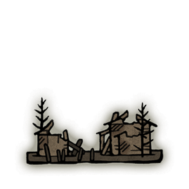
Abandoned Ailing Village
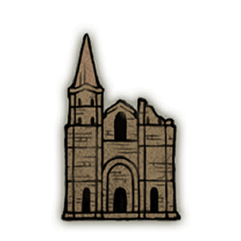
Abandoned Church
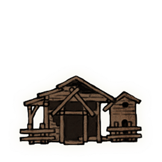
Albinauric's Shack
Artist's Shack (Gravesite Plain)
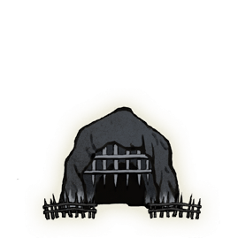
Belurat Gaol
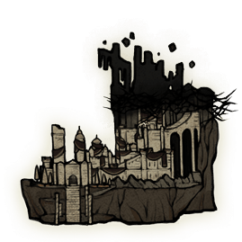
Belurat Tower Settlement
Bonny Gaol
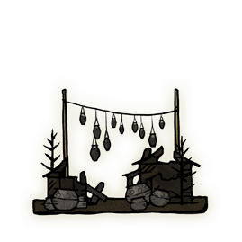
Bonny Village
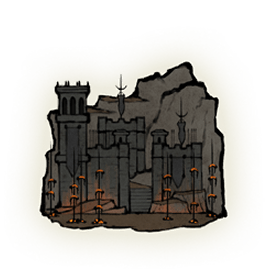
Castle Ensis
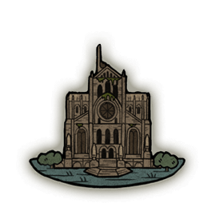
Cathedral of Manus Metyr
Church of Benediction
Church of Consolation
Church of the Crusade
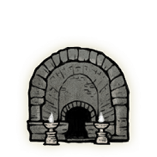
Darklight Catacombs
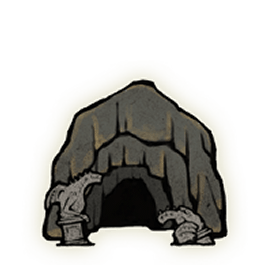
Dragon's Pit
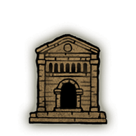
Eastern Nameless Mausoleum
Elder's Hovel
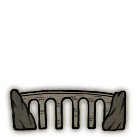
Ellac Greatbridge
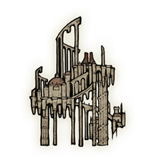
Enir-Ilim
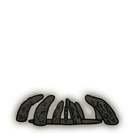
Finger Ruins of Dheo
Finger Ruins of Miyr
Finger Ruins of Rhia
Finger-Weaver's Hovel
Fog Rift Catacombs
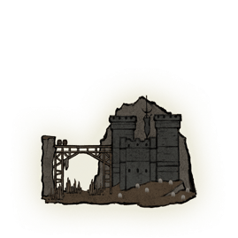
Fog Rift Fort
Fort of Reprimand
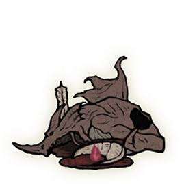
Grand Altar of Dragon Communion
Lamenter's Gaol
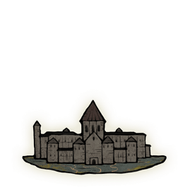
Midra's Manse
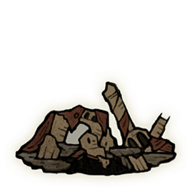
Moorth Ruins
Northern Nameless Mausoleum
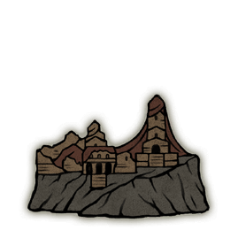
Prospect Town
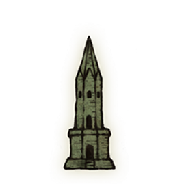
Rabbath's Rise
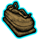
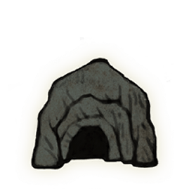
Rivermouth Cave
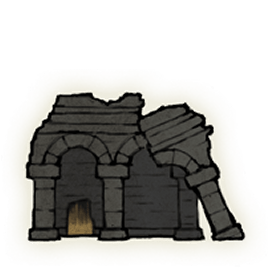
Ruined Forge Lava Intake
Ruined Forge of Starfall Past
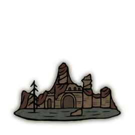
Ruins of Unte
Run-Down Traveler's Rest
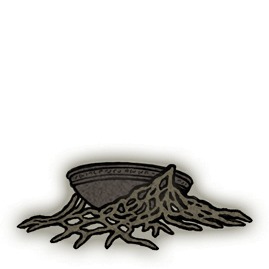
Scadutree Chalice
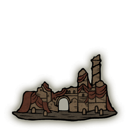
Scorched Ruins
Scorpion River Catacombs
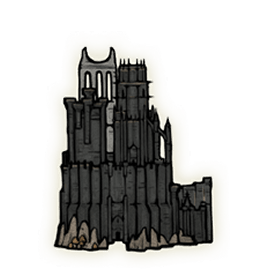
Shadow Keep
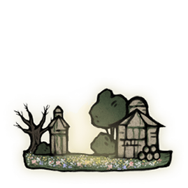
Shaman Village
Southern Nameless Mausoleum
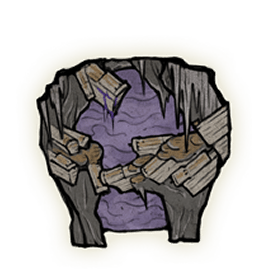
Stone Coffin Fissure
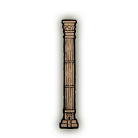
Suppressing Pillar
Taylew's Ruined Forge
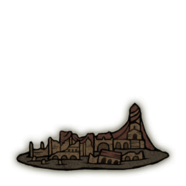
Temple Town Ruins
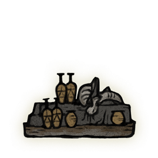
Village of Flies
Western Nameless Mausoleum

Whipping Hut